library(tidyverse) # manipulação de dados
library(metan) # estatísticas descritivas
library(rio) # importação/exportação de dados
library(emmeans) # comparação de médias
library(AgroR) # casualização e ANOVA
library(ExpDes.pt)9. Delineamento de Blocos Completos Casualizados
Pacotes
Delineamento de Blocos Completos Casualizados (DBC)
No Delineamento de Blocos Completos Casualizados uma restrição na casualização é imposta visando agrupar unidades experimentais uniformes dentro de um bloco, de maneira que a heterogeneidade da área experimental fique entre os blocos. O bloqueamento tem como objetivo reduzir o erro experimental, “transferindo” parte do erro experimental para efeito de bloco.
Características
- Utiliza apenas os princípios de repetição e casualização;
- Os tratamentos são alocados nas parcelas de forma inteiramente casual, sem nenhum tipo de bloqueamento.
- Exige que o material experimental e a área experimental sejam uniformes. Ele geralmente é mais utilizado em experimentos nos quais as condições experimentais podem ser bastante controladas (por exemplo em laboratórios);
Vantagens
- Controla as diferenças que ocorrem nas condições ambientais, de um bloco para outro;
- Pode haver heterogeneidade conhecida na área, desde que a alocação dos blocos seja feita de forma correta
- A variação entre blocos é isolada, logo, reduzindo a variância residual
Desvantagens
Devido a inclusão de mais uma fonte de variação no modelo, há uma redução nos graus de liberdade do erro.
Como exige-se homogeneidade dentro dos blocos, o número de tratamentos pode ficar limitado, visto que quanto maior é o bloco, mais difícil manter a sua homogeneidade.
Casualização
Para realizar a casualização em um experimento em DBC, pode-se utilizar a função sketch do pacote agroR. Neste exemplo, simulo a casualização de três tratamentos em um ensaio conduzido em delineamento de blocos completos casualizados com quatro repetições (r). Apenas para fins didáticos, é apresentada também a casualização em DIC.
trats <- c("50", "70", "100")
# casualização em DIC
set.seed(1)
sketch(trats, r = 4, pos = "line")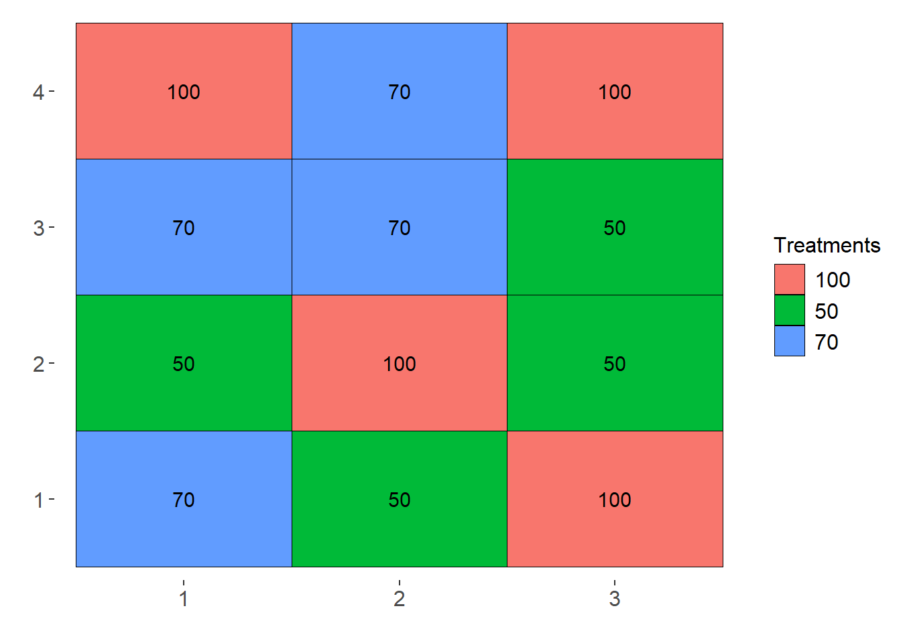
# casualização em DBC
sketch(trats, r = 4, design = "DBC", pos = "line")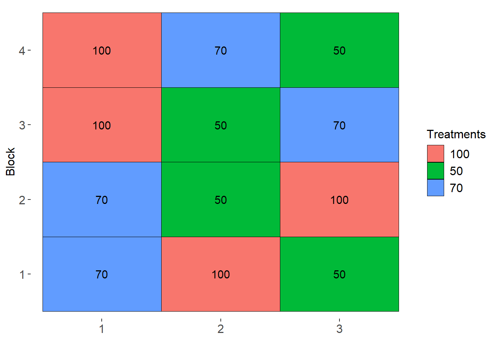
Conjunto de dados
O conjunto de dados utilizado neste exemplo é oriundo de um experimento que avaliou caracteres qualitativos e quantitativos de chicória sob diferentes níveis de sombreamento
OLIVOTO, T.; ELLI, E. F.; SCHMIDT, D.; CARON, B. O.; DE SOUZA, V. Q. Photosynthetic photon flux density levels affect morphology and bromatology in Cichorium endivia L. var. latifolia grown in a hydroponic system. Scientia Horticulturae, v. 230, p. 178–185, 2018. Disponível em: https://doi.org/10.1016/j.scienta.2017.11.031
Para fins didáticos, a área foliar (AF, cm\(^2\)) e a matéria seca por planta (MST, g planta\(^{-1}\)) mensuradas aos 35 dias após a implantação são apresentadas aqui.
Para importação, utiliza-se a função import() do pacote rio. A função as_factor converte as primeiras duas colunas para fator.
url <- "https://bit.ly/df_biostat"
df_dbc <- import(url, sheet = "DIC-DBC", setclass = "tbl")
df_dbc <- as_factor(df_dbc, 1:2)No seguinte gráfico, apresento as médias para tratamentos e blocos. Neste caso, observa-se que o bloco 1 apresenta uma média relativamente superior aos outros blocos, sugerindo que o efeito de bloco poderá ser significativo neste caso.
trat <- plot_bars(df_dbc, RAD, MST)
bloco <- plot_bars(df_dbc, REP, MST)
arrange_ggplot(trat, bloco)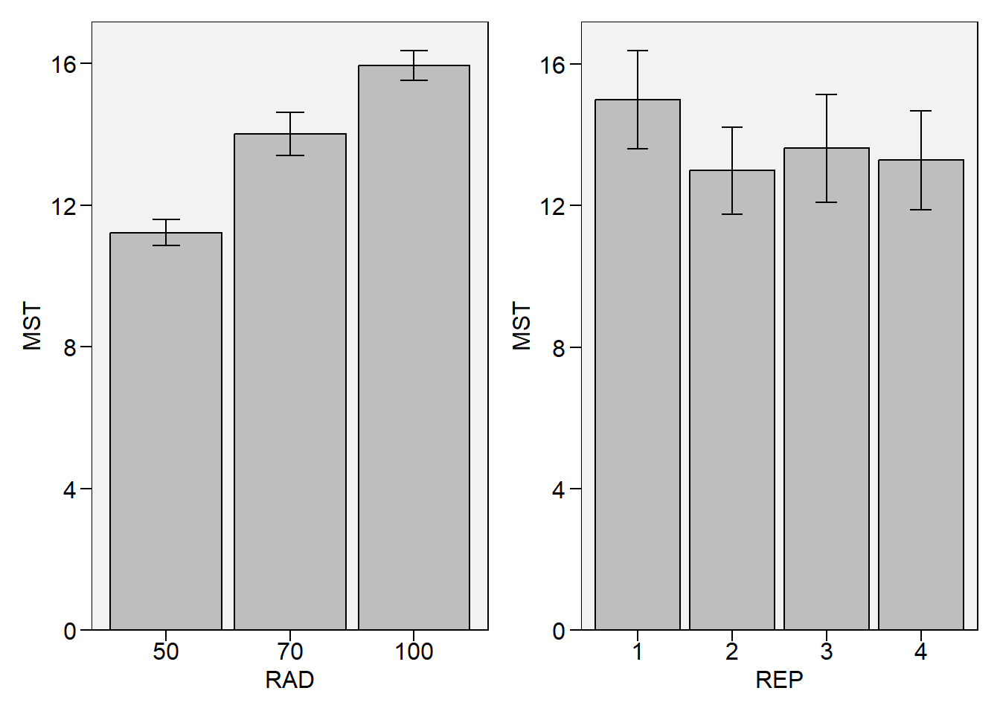
Verificação de outliers
A função inspect do pacote metan é utilizada para inspecionar o conjunto de dados. Com esta função, é possível identificar possíveis outliers, bem como valores faltantes.
inspect(df_dbc, plot = TRUE)
## # A tibble: 5 × 10
## Variable Class Missing Levels Valid_n Min Median Max Outlier Text
## <chr> <chr> <chr> <chr> <int> <dbl> <dbl> <dbl> <dbl> <lgl>
## 1 RAD factor No 3 12 NA NA NA NA NA
## 2 REP factor No 4 12 NA NA NA NA NA
## 3 AF_M2 numeric No - 12 3.65 5.28 6.12 0 NA
## 4 AF numeric No - 12 3648. 5287. 6118. 0 NA
## 5 MST numeric No - 12 10.7 13.6 16.9 0 NA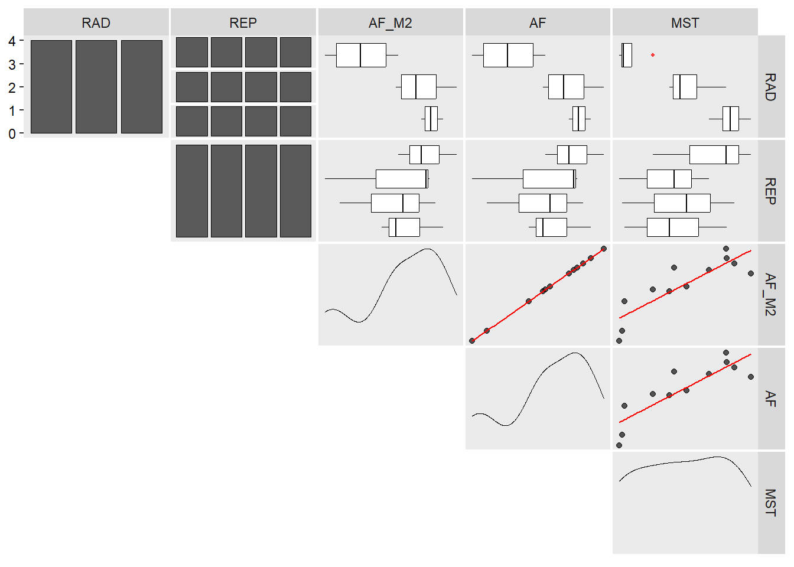
Estatística descritiva
A função desc_stat() do pacote metan computa estatísticas descritivas para os dois caracteres numéricos (AF e MST).
desc_stat(df_dbc)
## # A tibble: 3 × 10
## variable cv max mean median min sd.amo se ci.t n.valid
## <chr> <dbl> <dbl> <dbl> <dbl> <dbl> <dbl> <dbl> <dbl> <dbl>
## 1 AF 14.7 6118. 5144. 5287. 3648. 755. 218. 479. 12
## 2 AF_M2 14.6 6.12 5.14 5.28 3.65 0.753 0.217 0.478 12
## 3 MST 16.0 16.9 13.7 13.6 10.7 2.20 0.634 1.40 12Análise de variância
Modelo estatístico
O modelo do DBC é dado por
\[ {Y_{ij}} = m + {b_j} + {t_i} + {\varepsilon _{ij}} \]
Onde \(m\) é a média geral do experimento, \(b_j\) é o efeito de bloco, \(t_i\) é o efeito de tratamentos e \(\epsilon_{ij}\) é o erro experimental.
Análise de variância
A análise de variância é computada no software R utilizando a função aov(). Considerando o Delineamento de Blocos Casualizados (DBC), as duas fontes de variação incluídas no modelo são a de tratamento (RAD) e bloco (REP).
anova <- aov(MST ~ RAD + REP, data = df_dbc)
summary(anova)
## Df Sum Sq Mean Sq F value Pr(>F)
## RAD 2 45.06 22.529 138.78 9.47e-06 ***
## REP 3 7.07 2.356 14.51 0.00371 **
## Residuals 6 0.97 0.162
## ---
## Signif. codes: 0 '***' 0.001 '**' 0.01 '*' 0.05 '.' 0.1 ' ' 1Comparação de médias
A análise de variância revelou efeito de tratamento significativo. Nesse caso, segue-se realizando uma análise de comparação múltipla de médias. Podemos realizar a comparação par-a-par utilizando a função pwpm() do pacote emmeans. Neste exemplo, o teste Tukey é utilizado.
medias_dbc <- emmeans(anova, ~ RAD)
pwpm(medias_dbc) 50 70 100
50 [11.2] 0.0002 <.0001
70 -2.79 [14.0] 0.0012
100 -4.72 -1.93 [15.9]
Row and column labels: RAD
Upper triangle: P values adjust = "tukey"
Diagonal: [Estimates] (emmean)
Lower triangle: Comparisons (estimate) earlier vs. laterNeste exemplo, utilizaremos a função emmeans para realizar a comparação de médias pelo teste Tukey. Nesta abordagem, a avaliação da significância das médias de dois tratamentos é dada pela sobreposição das flechas de cada tratamento. Se dois tratamentos apresentam setas que se sobrepõem (considerando o eixo x), assume-se que estes tratamentos são estatisticamente diferentes um do outro.
Apenas para fins de comparação, incluirei a comparação de médias considerando o modelo DIC. Observe que a redução da estimativa do erro experimental considerando o delineamento DBC fez com que ficasse mais fácil encontrar diferenças entre os tratamentos.
anova_dic <- aov(MST ~ RAD, data = df_dbc)
medias_dic <- emmeans(anova_dic, ~ RAD)
medias_dbc <- emmeans(anova, ~ RAD)
plot_dic <-
plot(medias_dic,
xlab = "Matéria seca total (g)",
ylab = "Tratamentos",
CIs = FALSE, # remove os intervalos de confiança das médias
comparisons = TRUE) # insere setas para comparação de médias (Tukey)
plot_dbc <-
plot(medias_dbc,
xlab = "Matéria seca total (g)",
ylab = "Tratamentos",
CIs = FALSE, # remove os intervalos de confiança das médias
comparisons = TRUE) # insere setas para comparação de médias (Tukey)
arrange_ggplot(plot_dic,
plot_dbc,
ncol = 1,
tag_levels = "a")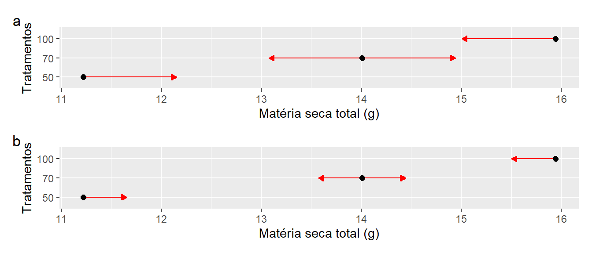
Criação de gráficos
medias <-
plot_bars(df_dbc, RAD, MST,
lab.bar = c("c", "b", "a"))
medias2 <-
plot_bars(df_dbc, RAD, MST,
plot_theme = theme_bw(),
lab.bar = c("c", "b", "a"),
values = TRUE,
width.bar = 0.6,
y.expand = 0.2)
arrange_ggplot(medias, medias2, tag_levels = "a")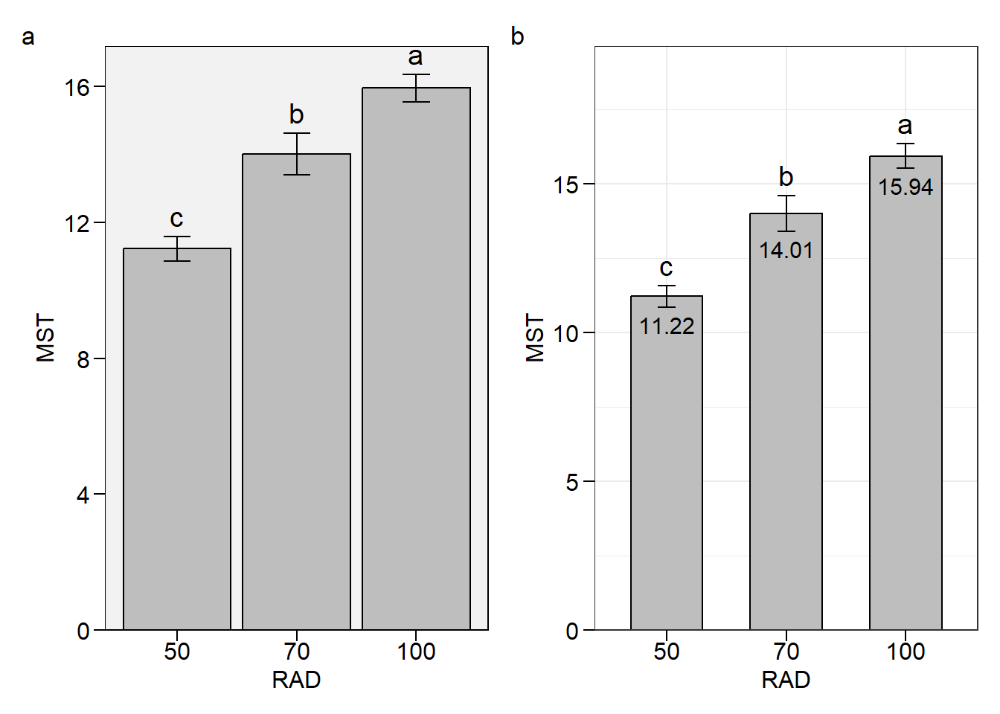
Pacote AgroR
No pacote agroR, a análise de variância neste delineamento pode ser realizada com a função DBC().
with(df_dbc,
DBC(RAD, REP, MST))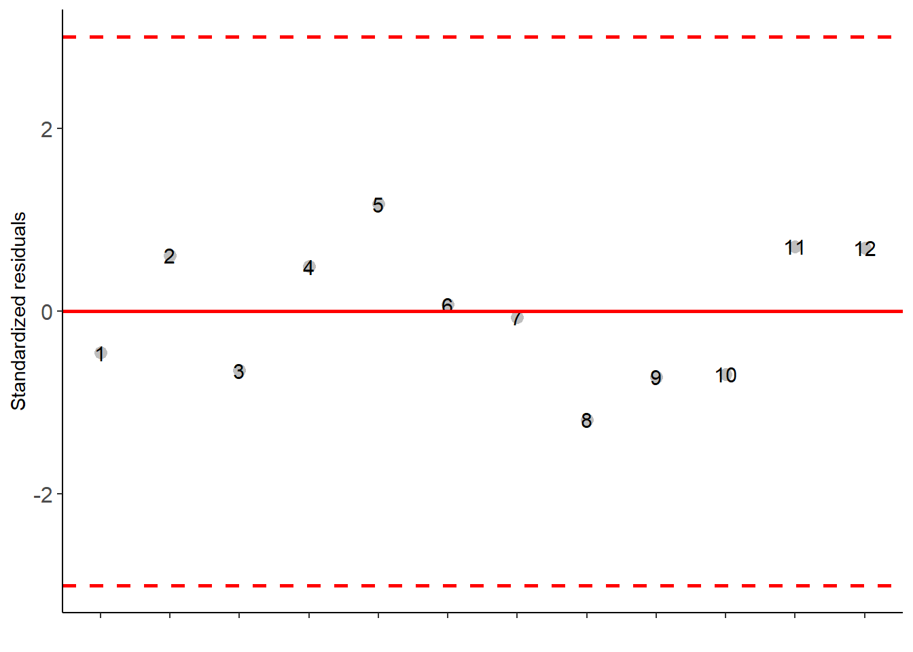
##
## -----------------------------------------------------------------
## Normality of errors
## -----------------------------------------------------------------
## Method Statistic p.value
## Shapiro-Wilk normality test(W) 0.9445588 0.5592776
##
##
## -----------------------------------------------------------------
## Homogeneity of Variances
## -----------------------------------------------------------------
## Method Statistic p.value
## Bartlett test(Bartlett's K-squared) 0.4182676 0.8112867
##
##
## -----------------------------------------------------------------
## Independence from errors
## -----------------------------------------------------------------
## Method Statistic p.value
## Durbin-Watson test(DW) 1.521488 0.1169862
##
##
## -----------------------------------------------------------------
## Additional Information
## -----------------------------------------------------------------
##
## CV (%) = 2.94
## MStrat/MST = 0.9
## Mean = 13.7232
## Median = 13.5946
## Possible outliers = No discrepant point
##
## -----------------------------------------------------------------
## Analysis of Variance
## -----------------------------------------------------------------
## Df Sum Sq Mean.Sq F value Pr(F)
## trat 2 45.0579657 22.5289828 138.78145 9.473392e-06
## bloco 3 7.0667049 2.3555683 14.51061 3.707071e-03
## Residuals 6 0.9740055 0.1623343
##
##
## -----------------------------------------------------------------
## Multiple Comparison Test
## -----------------------------------------------------------------
## resp groups
## 100 15.94093 a
## 70 14.00834 b
## 50 11.22022 c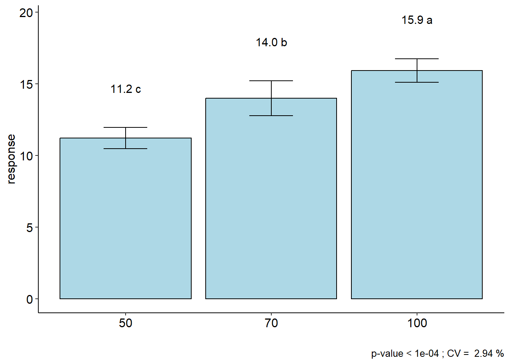
Exemplo 2: híbridos de milho
Dados
url <- "https://docs.google.com/spreadsheets/d/1vpVGdIkggRxmdnwrkllHbVA0TIHN85UK/edit#gid=1486281449"
df_maize <- import(url, dec = ",")
tabela <-
df_maize %>%
make_mat(HIBRIDO, BLOCO, RG) %>%
row_col_sum()
tabela B1 B2 B3 B4 row_sums
NP_1 8.820 9.360 7.98 11.760 37.920
NP_2 9.123 7.860 8.82 12.120 37.923
NP_3 7.740 8.123 7.92 11.220 35.003
NP_4 6.480 6.720 6.12 9.660 28.980
NP_5 4.060 5.180 5.90 9.992 25.132
col_sums 36.223 37.243 36.74 54.752 164.958R base
mod_hib <- aov(RG ~ HIBRIDO + BLOCO, data = df_maize)
med_hib <- emmeans(mod_hib, ~HIBRIDO)
pwpm(med_hib) NP_1 NP_2 NP_3 NP_4 NP_5
NP_1 [9.48] 1.0000 0.5666 0.0040 0.0002
NP_2 -0.00075 [9.48] 0.5657 0.0040 0.0002
NP_3 0.72925 0.73000 [8.75] 0.0533 0.0018
NP_4 2.23500 2.23575 1.50575 [7.24] 0.3168
NP_5 3.19700 3.19775 2.46775 0.96200 [6.28]
Row and column labels: HIBRIDO
Upper triangle: P values adjust = "tukey"
Diagonal: [Estimates] (emmean)
Lower triangle: Comparisons (estimate) earlier vs. laterplot(med_hib, comparisons = TRUE, CIs = FALSE)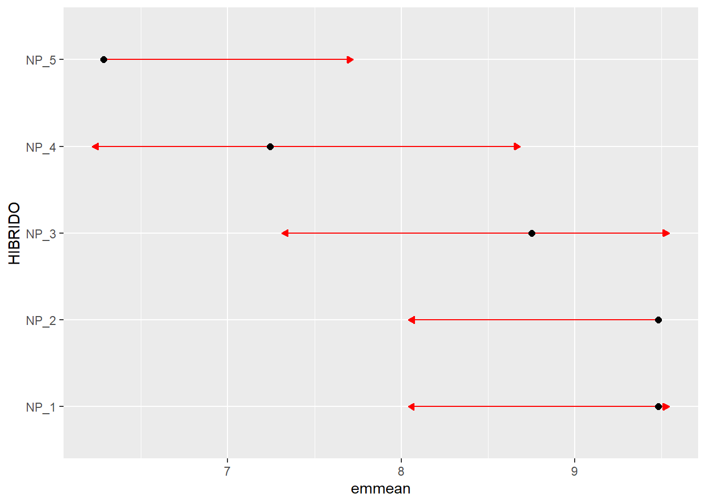
AgroR
with(df_maize,
DBC(HIBRIDO, BLOCO, RG))
-----------------------------------------------------------------
Normality of errors
-----------------------------------------------------------------
Method Statistic p.value
Shapiro-Wilk normality test(W) 0.987223 0.9920259As the calculated p-value is greater than the 5% significance level, hypothesis H0 is not rejected. Therefore, errors can be considered normal
-----------------------------------------------------------------
Homogeneity of Variances
-----------------------------------------------------------------
Method Statistic p.value
Bartlett test(Bartlett's K-squared) 7.696982 0.1033304As the calculated p-value is greater than the 5% significance level, hypothesis H0 is not rejected. Therefore, the variances can be considered homogeneous
-----------------------------------------------------------------
Independence from errors
-----------------------------------------------------------------
Method Statistic p.value
Durbin-Watson test(DW) 2.565113 0.7271231As the calculated p-value is greater than the 5% significance level, hypothesis H0 is not rejected. Therefore, errors can be considered independent
-----------------------------------------------------------------
Additional Information
-----------------------------------------------------------------
CV (%) = 8.2
MStrat/MST = 0.33
Mean = 8.2479
Median = 8.0515
Possible outliers = No discrepant point
-----------------------------------------------------------------
Analysis of Variance
-----------------------------------------------------------------
Df Sum Sq Mean.Sq F value Pr(F)
trat 4 32.629952 8.1574881 17.8475 5.449170e-05
bloco 3 48.794088 16.2646961 35.5850 2.983658e-06
Residuals 12 5.484793 0.4570661 As the calculated p-value, it is less than the 5% significance level. The hypothesis H0 of equality of means is rejected. Therefore, at least two treatments differ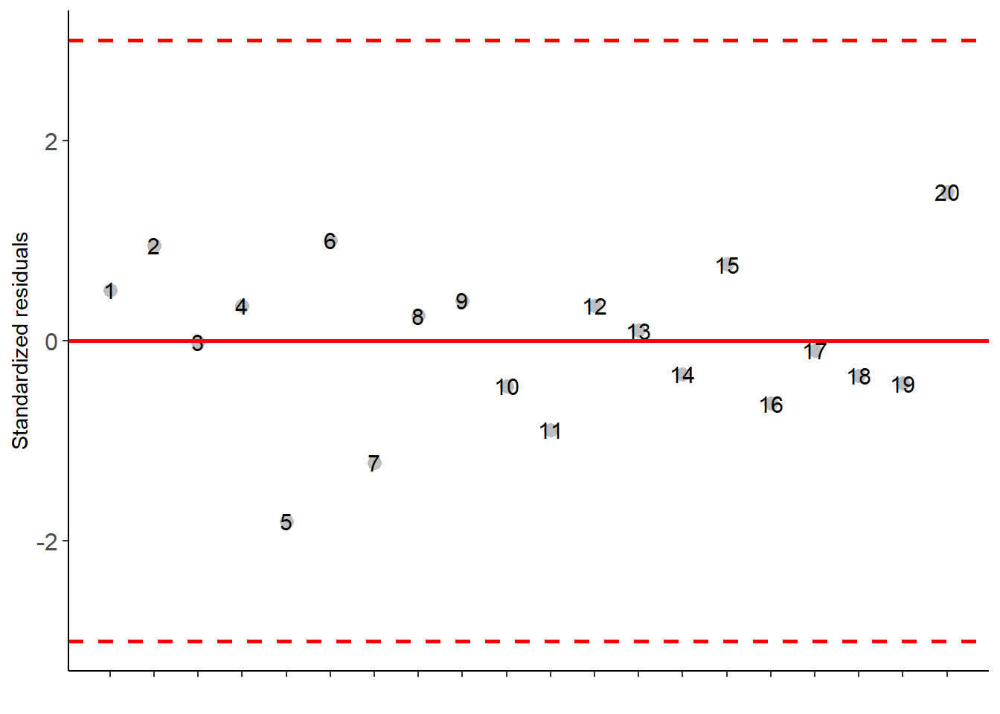
-----------------------------------------------------------------
Multiple Comparison Test
-----------------------------------------------------------------
resp groups
NP_2 9.48075 a
NP_1 9.48000 a
NP_3 8.75075 ab
NP_4 7.24500 bc
NP_5 6.28300 c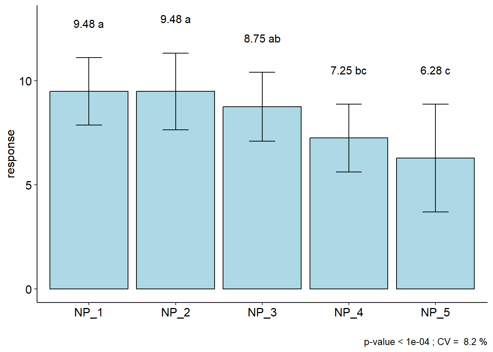